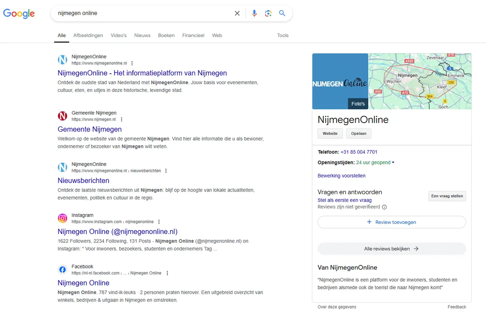
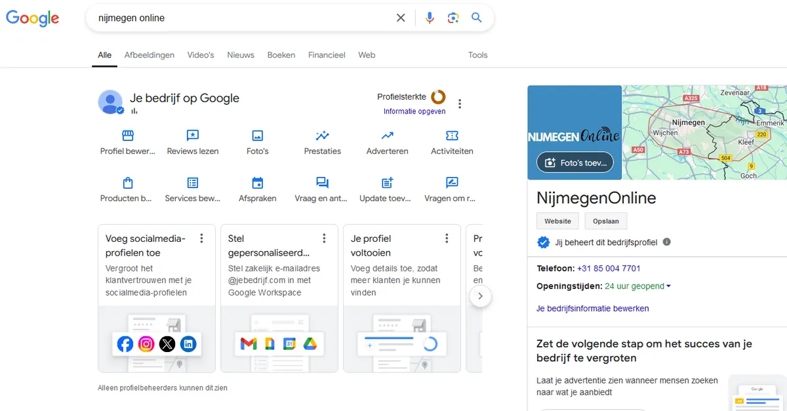

5 Succesvolle Marketingstrategieën voor Lokale Bedrijven in Nijmegen
Gepubliceerd op 29 augustus 2024, bijgewerkt op 30 augustus 2024
Onderdeel van de gids Ondernemen in Nijmegen

In een dynamische stad als Nijmegen is de concurrentie groot en is zichtbaarheid essentieel voor succes. Lokale bedrijven moeten zich onderscheiden om hun doelgroep effectief te bereiken en te groeien. Maar hoe zorg je ervoor dat jouw bedrijf opvalt in de drukte van de lokale markt? In dit artikel delen we vijf bewezen marketingstrategieën die speciaal zijn ontwikkeld voor ondernemers in Nijmegen. Van slimme SEO-technieken tot het benutten van sociale media, deze tips helpen je om je merk te versterken en je bedrijf naar een hoger niveau te tillen.
Zorg dat je bedrijf online goed vindbaar Is
Steeds meer mensen zoeken online naar lokale bedrijven en diensten. Daarom is het belangrijk dat jouw bedrijf gemakkelijk te vinden is op internet. Begin met het aanmaken van een gratis bedrijfsprofiel op Google. Google noemt dit Google Mijn Bedrijf. Dit zorgt ervoor dat je bedrijf verschijnt wanneer mensen in Nijmegen zoeken naar de producten of diensten die jij aanbiedt.
Wanneer je zoekt op NijmegenOnline of Nijmegen Online zal je ons platform naar voren zien komen. Zowel als resultaat als bedrijf (zie rechterkant van beide foto’s).


Gebruik sociale media om je bereik te vergroten
Sociale media zijn krachtige tools om meer mensen te bereiken en in contact te komen met je klanten. Platforms zoals Facebook, Instagram, Snapchat en TikTok worden dagelijks door tienduizenden mensen in Nijmegen gebruikt. Dit biedt je een geweldige kans om je bedrijf onder de aandacht te brengen.
Door actief te zijn op sociale media laat je mensen zien wie je bent en wat je te bieden hebt. Dit kan helpen om nieuwe klanten aan te trekken en bestaande klanten betrokken te houden.
Tip vanuit onze kant: voordat je met social media begint om een jaarkalender te maken waarin je van te voren nadenkt dat je wanneer wilt plaatsen. Consistentie is namelijk heel erg belangrijk wanneer je een social media kanaal begint.
Jaarkalender maken
Een jaarkalender maken klinkt heel spannend maar hoeft in de basis maar 12 posts te bevatten. Elke maand 1 post is een stuk behapbaarder dan elke dag 3 posts maken. Als voorbeeld kan je een kleding winkel nemen welke 4x per jaar een nieuwe collectie heeft (zomer, herfst, winter, lente). De eerste 4 posts zijn hierbij de 4 seizoenen. Nu vraag je 2 trouwe klanten waarom ze je steeds bij jou komen om een review. Dan zit je al op 6 posts. Gooi er nog 4x een kortingsactie uit, denk aan opruimingscollectie omdat het seizoen afgelopen is zit je al op 10 posts. Dan kan je nog speciale dagen gebruiken, iets persoonlijks vertellen, een post met humor maken en je bent er al.
Wanneer je het onder de knie hebt kan je de kalender altijd vullen met meer social media berichten. Voordat je het bedrijf op elk social media platform gaat aanmelden is het slim om even na te denken wat je doelgroep is. Snapchat en Tiktok zijn veelal voor de jongeren, Facebook voor ouderen en Instagram voor het plaatsen van foto’s.
Laat ons u helpen om uw bereik te vergroten: Bekijk de mogelijkhedenVraag tevreden klanten om een (online) review
(Online) reviews zijn tegenwoordig een belangrijke factor bij het kiezen van een bedrijf. Potentiële klanten lezen vaak beoordelingen om te zien of andere mensen goede ervaringen hebben gehad. Door tevreden klanten te vragen om een review, kun je vertrouwen opbouwen en je bedrijf aantrekkelijker maken voor nieuwe klanten.
Hoe vraag je om reviews?
- Vraag het persoonlijk: Wanneer een klant tevreden is met je product of dienst, vraag dan vriendelijk of ze een korte beoordeling willen schrijven. Dit kan bijvoorbeeld via e-mail, of zelfs in een gesprek in je winkel of kantoor.
- Maak het eenvoudig: Stuur een follow-up e-mail na hun aankoop met een directe link naar je Google Bedrijfsprofiel of andere reviewplatforms. Zorg ervoor dat het proces eenvoudig en snel is.
- Reageer op reviews: Bedank klanten altijd voor hun feedback, zowel positieve als negatieve. Dit laat zien dat je om je klanten geeft en bereid bent om te luisteren en te verbeteren.
Het verzamelen van positieve reviews helpt om je reputatie te versterken en kan nieuwe klanten overtuigen om voor jouw bedrijf te kiezen. Zorg ervoor dat je regelmatig controleert of er nieuwe reviews zijn en reageer waar nodig.
Werk samen met andere (lokale) ondernemers
Samenwerken met andere bedrijven in Nijmegen is een slimme manier om je bereik te vergroten, kennis uit te delen en nieuwe klanten aan te trekken. Door krachten te bundelen, kun je elkaar ondersteunen en elkaars netwerk benutten, wat voor beide partijen voordelig is. Ben je een pedicure en ben je op zoek naar vrouwelijke klanten kan je eens een balletje opgooien bij een kapper in je wijk.
Hoe kun je dit aanpakken?
– Organiseer gezamenlijke promoties of evenementen:
Werk samen met andere lokale ondernemers om speciale aanbiedingen, kortingen, of evenementen te organiseren. Dit trekt niet alleen meer bezoekers, maar biedt ook de kans om nieuwe klanten te bereiken die anders misschien niet van je bedrijf zouden hebben gehoord. Zit je krap bij kas, dan kan je bijvoorbeeld samen met een andere ondernemer een flyer maken. Jij promoot je diensten op de ene kant, en je collega ondernemer de andere kant. Deze flyer laat je mee bezorgen bij de huis en huis bladen en klaar ben je.
– Bied elkaars producten of diensten aan:
Denk bijvoorbeeld aan een restaurant dat samenwerkt met een lokale bakkerij om elkaars producten te promoten. Door elkaars klantenkring te bereiken, kun je eenvoudig je eigen bereik vergroten.
– Maak gebruik van lokale platforms zoals NijmegenOnline:
Door samen te werken met een lokaal platform zoals NijmegenOnline, kun je je zichtbaarheid vergroten bij een breed en relevant publiek. NijmegenOnline biedt advertentieruimte en promotiemogelijkheden om je bedrijf onder de aandacht te brengen van inwoners en bezoekers van Nijmegen. Met onze kennis van de lokale markt helpen wij je om effectief te communiceren met je doelgroep.
Samenwerken met andere ondernemers, en het benutten van lokale platforms zoals NijmegenOnline, helpt om je netwerk uit te breiden en je marketinginspanningen krachtiger te maken.
Plaats regelmatig content op je website
Het regelmatig plaatsen van nieuwe content, zoals blogartikelen, op je website is een effectieve manier om meer bezoekers aan te trekken en je bedrijf beter vindbaar te maken. Door nuttige en relevante informatie te delen, kun je je expertise laten zien en potentiële klanten overtuigen van de waarde die jouw bedrijf biedt.
Hoe begin je met het schrijven van blogs?
– Schrijf over onderwerpen die je klanten interesseren:
Denk aan veelgestelde vragen, tips en adviezen, of verhalen over je producten of diensten. Bijvoorbeeld, als je een lokale bakker bent, kun je artikelen schrijven over de herkomst van je ingrediënten, recepten delen, of tips geven voor thuisbakken.
– Gebruik simpele taal en praktische voorbeelden:
Zorg ervoor dat je artikelen begrijpelijk zijn voor iedereen, vooral als je doelgroep minder ervaring heeft met online informatie. Schrijf in een heldere en toegankelijke stijl, en geef praktische voorbeelden waar mensen iets aan hebben.
– Link naar andere nuttige bronnen:
Verwijs in je artikelen naar andere pagina’s op je website of naar relevante externe bronnen. Dit helpt niet alleen je lezers, maar zorgt er ook voor dat je website beter scoort in zoekmachines.
Door regelmatig nieuwe blogs te publiceren, blijf je in contact met je klanten, bouw je vertrouwen op, en verhoog je je zichtbaarheid online. Combineer deze strategie met een samenwerking met NijmegenOnline, zodat je content nog meer exposure krijgt binnen de lokale markt.
Stap voor Stap je bedrijf starten in Nijmegen: Alles wat je moet wetenConclusie
Met deze 5 online marketingstrategieën kan je binnen Nijmegen een groot bereik krijgen wat ten goede komt van je omzet. De ene marketingstrategie punt gaat je ook helpen om een ander punt onder de aandacht te brengen. Als voorbeeld geven we het schrijven van blog artikelen voor op je website. Wanneer je een blog artikel klaar hebt kan je deze weer opnemen in je social media jaarkalender. Daarnaast helpt het artikel je ook weer om beter vindbaar te worden in zoekmachines zoals Google en Bing.
Mocht dit alles je teveel tijd en energie kosten kunnen wij je verder helpen. Ons platform staat hoog in de zoekmachines voor vele zoektermen. Door met ons samen te werken zal jij direct onder de aandacht worden gebracht voor je doelgroep. Dit komt weer ten goede van jou zichtbaarheid en zullen jouw (potentiële) klanten je eerder vinden.
Meer ondernemer tips lezen? Klik dan hier voor de overige blog artikelen.
Laat ons u helpen om uw bereik te vergroten: Bekijk de mogelijkhedenMarketing-, reclame- en webbureaus in Nijmegen
Zin om te beginnen? In onze bedrijvengids vind je alle 171 bureaus in Nijmegen, met openingstijden, kenmerken en een kaart.
Bekijk alle 171 bureaus in Nijmegen
Heb je zelf een bureau? Laat je hier uitlichten.